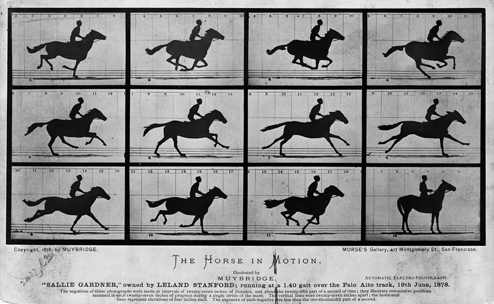

日常摄影实践 · 第 18 讲
前十七讲都在教你把一张照片拍好。这一讲是收尾：把十七讲攒下的本事，变成一组有开头有结尾、别人愿意看第二遍的照片。
← 上一讲 · 第 17 讲 · 备份与整理 · 本课程到此结束 · 回到课程首页 · 曝光速查表 · 词汇表
这门课走到这里，曝光三角、景深、白平衡、直方图、构图你都见过，第 8 讲教你怎么挑， 第 17 讲教你怎么别弄丢。零件齐了，但它们还散着。 散着的照片每张单看都还行，摊在一起却什么都不是——缺的不是技术，是一件事。
所以最后一讲只做一件事：把十七讲变成一个项目。 先定主题，再拆成具体到能执行的场景，然后一天一张地拍，然后筛，然后排，然后发出去。 每一步前面都讲过——这一讲是把它们排成顺序。
「城市的光」「我的 2026 年」「窗台」——这三个都太大，大到你没法在七天里拍完， 也没法在任何一个晚上说清「今天要拍的那一张是什么」。
好主题的标准只有一条：能用一句话说清，并且这句话里装得下七种不一样的样子。 比如「一周里家里窗台的光」就合格：话说得完，但七天的光可以完全不同——斜光、硬光、 散光、反光、暖光、台灯光。
缩小主题的诀窍是加限定词，而不是加形容词。 「拍光」→「拍家里窗台的光」→「拍一周里、只在早上七点到八点之间、窗台上的光」—— 每加一层，范围就小一圈，可执行性就高一层。等到某个细节已经明确到 「如果拍砸了我能说清是哪儿错了」，主题就对了。
一个判断题：把主题说给一个朋友听，如果他反问「那到底是拍什么？」， 说明主题还不够小；如果他听完直接开始给你出主意，说明主题已经小到他能替你排场景了。
主题只是方向，不能按快门。方向要拆成「地点 + 时间 + 一个主体」才算场景。 写场景的检验标准是：读出来像一条可以执行的日程，而不是一个话题。
看一个合格与不合格的对比：「窗台」——地点有了，时间没有，主体没有，你不知道该等什么； 「周六早上七点半，家里的窗台，光从左边斜进来，主体是绿萝的影子落在墙上」 ——地点、时间、光的方向、主体四样齐了。这时候你才能判断：该不该带 Pocket 4、 什么时候站好位置。
七个场景怎么来？先列十二个，砍到七个。列的时候不许挑「拍不拍得成」， 只管列；砍的时候才用现实标准：那天我不在家、那个时段是上班时间、这阵子光线进不来。 砍掉的那五个别删，存进备用清单——它们是后半段「失败预案」的全部依托。
这个限制看起来残酷，其实是整个项目能完成的关键。 它逼你在按快门之前把话说清楚：今天这一张的主体是谁、光从哪来、我要画面亮一点还是暗一点—— 正是这门课开头那三句判断。它也逼你做取舍：每天同一类光线只能选一张， 选哪张就等于你在替这组照片做第一次编辑。
器材上不需要新东西，你只有两台机，所以分工必须写进清单里。
| 这一天 | 场景 | 光从哪来 | 用哪台 | 当天要落地的判断 |
|---|---|---|---|---|
| 周一 | 厨房台面，早晨 | 侧光，窗在右手边 | iPhone Air | 点一下杯子测光；白墙发灰就往上加半格曝光 |
| 周二 | 同一个台面，正午 | 硬顶光，影子很短 | iPhone Air | 硬光难看时，等半小时影子长开一点再按 |
| 周三 | 客厅角落，阴天 | 整面窗的散光 | Osmo Pocket 4 | 散光下适合拍细节纹理；ISO 固定最低，只调快门 |
| 周四 | 窗外一小片天空 | 阴天的均匀亮部 | Osmo Pocket 4 | 天空最亮，点测光对着主体，让天空留一点灰 |
| 周五 | 台灯下的一本书 | 单盏暖光，很暗 | Osmo Pocket 4 | 只有一盏灯，ISO 可以往上走；三轴云台稳住画面 |
| 周六 | 窗台绿萝与它的影子 | 早上的斜光 | iPhone Air | 主体是影子不是植物；长按锁住亮度再构图 |
| 周日 | 整组里最想要的那一张 | 日落的暖光 | Osmo Pocket 4 | 光只有十几分钟；先站好位，再掏机器 |
这张表就是完整的计划表，每格都写着地点、时间、光的方向、用哪台、当天要练哪条判断， 今晚二十分钟就能填满——填的全是你真实生活里的地点， 因为只有你每天都会去的地方，七天后你才可能还剩下东西。
iPhone Air 的位置：随身、白天、光线够用、拍完就想发，它的活是「顺手的那几张」。
操作上：轻点主体测光，需要时拖一下小太阳，逆光时长按锁住 AE/AF再重新构图。
它只有一颗 26 mm 镜头，光圈固定 f/1.6 不可调，
想要虚化只能靠走近一点（并用上它的 2× 裁切）；想更广只能往后退，没有超广角可用。
Osmo Pocket 4 的位置：光暗、要稳、要留余量、值得为它出门，它的活是「认真的那几张」。
操作上：旋开屏幕开机，快门 1/8000 s – 4 s、ISO 50–12800 都能手选，
光圈固定 f/2.0 也不可调，景深同样只能靠距离和变焦换。
要留后期的空间就存 DNG，日常随手拍存 JPEG 就够。
两台机的分工在第 9 讲讲过，这一讲多了一条新规矩：清单里要提前写死哪一天用哪台， 不然就会出现「今天该带 Pocket 4，结果只带了手机」。
七天拍完，七张（或更多）摊在相册里。现在回到第 8 讲：删、挑、调。 这一讲的筛选比日常更严，因为它多了一条项目特有的标准：组内一致—— 把七张并排看，问一句「它们是不是看起来像同一个星期？」 如果有一张明显属于另一个世界（比如整组都是暖调，只有它是冷白的）， 要么修到一致，要么把它拿出来单独算。删的标准仍照第 8 讲那四条，哪怕它是「窗台」那张，也照删。
七张照片摊在桌上，你把它们排成一排——顺序一变，这组照片就在讲另一个故事。 这是最便宜、也最被低估的一步：不需要再拍一张，排列本身就是编辑。 三种常用排法各有它讲的东西：按时间排（周一到周日）讲的是「过程」； 按亮度排（从亮到暗）讲的是「光的走向」，不需要任何文字说明； 按距离排讲的是「接近」。
两个新手常忘的顺序问题：第一张和最后一张最值钱—— 观众要不要看第二眼靠的就是这两张，别把最弱的一张放第一张； 横竖幅要顺——别头两张竖、中间忽然一张横，除非那张横的在内容上确实是个转折。

一个计划要能执行，必须先假设它会失败。下面是最常见的几种情况与各自的处理顺序。
| 出了什么事 | 先做这一步 | 然后怎么办 |
|---|---|---|
| 下雨 | 别急着换主题，先看雨改变了什么 | 雨把光变软、把颜色洗淡、把地面变成镜子——这些都是新的光，不是没有光。 改拍窗上的雨痕、地面的倒影；实在出不了门，就拍屋里在雨天的样子， 并在清单上注明这张是「雨天的替代」。 |
| 没灵感 / 到点不想拍 | 不要重新思考主题，直接翻备用清单 | 备用清单里那五个被你砍掉的场景就是为这一刻准备的。 连它们也不想拍，就拍「此刻正在发生的任何一件小事」—— 冒气的水杯、楼下来往的车灯、你正在做的那件事。 主题宽一点不会毁掉这组照片，断掉一天才会。 |
| 拍废了 | 先判断能不能靠后期救 | 构图歪了、亮度偏了——能救，救完再按第 8 讲的调图顺序（先影调后色彩）。 糊了和爆死了救不回来：只能重拍同一个场景、换个时间， 或者把那张删掉，用相邻那张顶替。别将就。 |
| 第七天才发现前六天全是废片 | 承认，然后换策略 | 不要硬凑。把主题缩到手上已有的东西——改拍「这七天我拍过的」， 用能用的三到五张成组。一组五张能看的，比七张凑不齐的强得多； 数量不够时，正确做法是缩范围，不是拉低标准。 |
把这两张表放在一起，项目就完整了： 计划表管「顺利的时候」，预案管「不顺利的时候」。两个都在纸上，项目才跑得完。
一组照片排好序，最后一步是让它离开你的相册。两条路：发出去—— 第 11 讲写过做法：先潜水，再挑一张代表这一组的发出去，等有人回应了再考虑发整组； 图虫的发现页是默认起点，因为那里讨论的是片子本身而不是器材。 或者打印出来——七张可以印成小册子。打印会暴露一切：暗角、边缘的杂物、 没对齐的水平，全都无处可藏，这也是它值钱的原因。 课程使命里那条「愿意当头像、愿意打印」，到这一步才算兑现。
发之前做最后一件事，和第 8 讲结尾那句一样：不要解释， 只问一句——「你喜欢它哪里？」对方的回答，比你看一百遍有用。
动手练习（今晚二十分钟 + 之后每天十分钟）：
整个过程不需要买任何器材。你缺的不是设备，是那七张必须拍到的照片。
1. 为什么「每天只拍一张」反而让项目更容易完成？
因为它把「今天拍什么」这个开放题变成了「今天清单上第几条还没拍」这个是非题， 省掉了每天的决策消耗。更重要的是，它逼你在按快门前把话说清楚——主体是谁、光从哪来、亮一点还是暗一点， 这正是这门课开头的三句判断。
2. 主题太大（七天拍不完）该怎么改？为什么不是加形容词？
靠加限定词缩小范围，而不是加形容词。形容词只是修饰，不会改变你能拍到的东西； 限定词会改变：加「家里」「窗台」「早上七点到八点」，每一层都把范围缩一圈。 检验方法：如果你能对某个细节说清「拍砸了我能说出是哪儿错了」，主题就对了。
3. 第七天发现前六天全是废片，怎么办？
不要硬凑，也不要拉低标准凑数。正确做法是缩范围： 把主题改小，改成「这七天我确实拍到的东西」，用能用的三到五张成组—— 一组五张能看的，比七张凑不齐的强得多。糊了或曝光爆了的那张是真的救不回来 （第 8 讲说过：那些信息在按下快门时就没被记下来），只能重拍或用相邻那张顶替。 数量不够时缩范围，标准不够时才放宽——但本讲的原则是不放宽。
这一讲哪里没说清？回到 OpenCode 里直接问你的老师（那个正在运行 teach
的 agent）——它可以陪你把主题拆成清单、把七天计划表填成你自己家里的真实场景，
或者帮你判断一组照片的顺序讲的是不是你想讲的那件事。
你的两台机器（iPhone Air 与 Osmo Pocket 4，两台光圈都不可调）
都在它笔记里，随时可以让它把任何一讲改写成你设备上的具体操作。
推荐一手资料：
《美国纽约摄影学院摄影教材》
的「影像的叙事与系列」部分 —— 本课程的骨干教材。它讲的是为什么一组照片比一张照片更有力量，
正好是这一讲要补的最后一环。
想看具体的图解与样片，可以翻
马格南图片社的摄影师名录
—— 看一个人的一整组，比看一百张单片有用得多。
发片前想看看别人怎么发、去
图虫的发现页 和
少数派：摄影。
两台机的参数以官方页为准：DJI Osmo Pocket 4 规格页、
Apple iPhone Air 技术规格。
图片来源与授权：图片版权说明。
上一讲：第 17 讲 · 备份与整理 ·
下一讲：本课程到此结束 · 回到课程首页
速查：曝光速查表 ·
构图与光线速查表 ·
词汇表
本讲新引入的术语（可并入词汇表）： 拍摄项目（一次有主题、有起止、有交付物的拍摄任务）、 主题（能用一句话说清的项目范围声明）、 场景清单 / shot list（由地点、时间、主体组成的拍摄单元列表）、 叙事顺序 / sequence（一组照片内部的排列次序）、 组内一致性（一组照片看起来属于同一时空的程度）、 备用场景（清单之外、用来顶替拍不成场景的选项）、 失败预案 / contingency plan（开拍前写下的「出事怎么办」）。